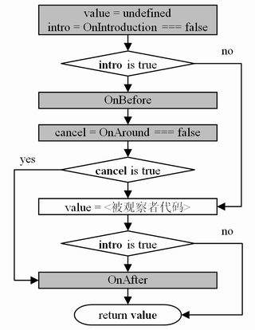

1. 字词上的错误（24处）
代序，页1，倒数第五行
然而一如我现在所见到，
改为
然而一如我现在所见到的，
P22，表1-2，（含表头）第三行、第二列
也被称为Cliet-Side JavaScript
改为
也被称为Client-Side JavaScript
P30，表2-2，（含表头）第三行、第三列
一些函数/方法的运回值是数值
改为
一些函数/方法的返回值是数值
P37，2.2.3.3节最末处的示例代码
(function foo()
/.html/ ...
});
改为
(function foo(){
/.html/ ...
});
P42，正文中部，引用框内
因此有关它的细节请参考“2.5 面向对象编程的语法概要”。
改为
因此有关它的细节请参考“5.7 类型转换”。
P53，中间引用框之上的一行
……使用“ identifier: statement”的语句开始一个标签声明。
改为
……使用“ identifier: statement”的语法开始一个标签声明。
P101，最后一个代码示例块
arr_properties = [
['pop'], 0
];
改为
array_properties = [
['pop'], 1
];
P147，脚注22第二行
由于delete的运算级高于……
改为
由于delete的运算符优先级高于……
P157，（除代码块之外的正文）第三段第二行
我们在实例不能访问ob.proto的情况下，……
改为
我们在实例不能访问obj.proto的情况下，……
P157，（除代码块之外的正文）第三段第三行
……可以补完对图3-11中的构造器原型，……
改为
……可以补全图3-11中的构造器原型，……
P170，倒数第二段第二行
也可以在处理句柄中使用“throwe”来重新触发异常。
改为
也可以在处理句柄中使用“throw e”来重新触发异常。
P189，第三段第二行
这个特性就是通过接口（interface）向显露系统，以及……
改为
这个特性就是通过接口（interface）向外显露系统，以及……
P209，第一段第一行
整个编程的模式被简化了函数（function）与其参数（arguments）的运算，……
改为
整个编程的模式被简化成了函数（function）与其参数（arguments）的运算，……
P247，脚注第二行
例如“obj.eval('value = 100')”;将在obj的对象闭包中执行代码。
改为
例如“obj.eval('value = 100');”将在obj的对象闭包中执行代码。
P255，最末一段，倒数第三行
原始代码中的，以及当前（装载时的）环境下的符号系统。事实上一些在程度中嵌入的
改为
原始代码中的以及当前（装载时的）环境下的符号系统。事实上一些嵌入程序中的
P319，第一个代码块，第四行（注释）
亦即时字节类型(vbByte)
改为
亦即是字节类型(vbByte)
P325，第二个代码块，示例2中的注释
在（隐式）转换将被忽略
改为
在（隐式）转换时将被忽略
P328，第二个代码块（行）
行前的行号，应标为15。
P343，图6-1下的一段，第一行
……，第7章则对“应用”……
改为
……，第6.7小节则对“应用”……
P352，最末一段第二行
然而如果用户想要Qomo充分利用函数式、动态语言以及……
改为
然而如果用户想要知道*Qomo*如何充分利用函数式、动态语言以及……
P390，6.3.3小节中的第一个代码块，第三个函数声明
function f2() {
return undefined;
}
改为
function f3() {
return undefined;
}
P438，图6-2存在较多的错误
[正确图例如下] 
P491，第一段第二行
（因此若一定要在apply()）中使用数组，那么……
改为
（因此若一定要在apply()）中使用，那么……
2. 文意上的错误（6处）
P3，倒数第五行
中国可能还有2/3的IT人在玩一种叫“电子公告板（BBS，……
改为
国内IT人中可能还有2/3的触网者在玩一种叫“电子公告板（BBS，……
P8，倒数第四段，最末一句
当时还没有PHP，而ASP也只是刚刚出现，并不成熟。
改为
当时我还不知道PHP，而ASP也并不那么流行。
P29，脚注第二行
Mozilla的Firefox插件
改为
Mozilla Firefox中的FireBug插件
P37，2.2.3.3节的最末一段，最后一行
下例所示的代码在SpiderMonkey JavaScript的任意位置都不是具名函数……
改为
下例所示代码中的函数foo()在SpiderMonkey JavaScript的表达式中，以及其所在表达 式之外（的全局或其它函数闭包中）都是不具名的……
说明：
SpiderMonkey JavaScript中，这个函数的名称在它的函数体内部仍然是有意义的。例如下面的代码仍可以通过函数名来访问它：
(function foo() {
alert(foo.toString()); /.html/<--这里仍可以访问标识符foo
});
P49，第一行
（……对于引用类型数）据来说，则是存放所引用地址的内存（即指向用数据的指针）。
改为
（……对于引用类型数）据来说，则是存放引用地址（指向引用数据的指针）的内存。
P90，表2-20
1)、（除表头外）第二行、第四列中，应添加内容：
- “数值直接量声明中的符号（正、负或指数）”
2)、（除表头外）第三行、第四列中，“参数声明”应改为：
- “形式参数表”
3)、（除表头外）第五行、第四列中，“对象成员存取”应移到该行的第三列中。
3. 标点、文法上可以更好的（12处）
代序，页1，正文第一段第三行
……等都被分在“命令式”语言范型的畴；“函数式”语言则是……
改为
……等都被分在“命令式”语言范型的畴，“函数式”语言则是……
说明：
该句是两个单句，不必使用“；”号。
代序，页1，正文第一段第五行
当然从语言的实现方式来看，……
改为
当然，从语言的实现方式来看，……
说明：
这时用个“，”号，停顿更为自然。
前言末页，倒数第三段第二行
然后试读一二章节，可以先选读一些在你的知识库中看来很新鲜的，以及一些你自认为已经非常了解的内容。
改为
然后试读一些章节。你可以先选读一些在你的知识库中看来很新鲜的，以及一些你原本已经非常了解的内容，……
说明：
前面的“一二章节”可能存在歧义，被读者误解为确指“第一、二章”。其它修改 以及语句上更为通顺。
P16，倒数第四行
它们不得不面对这种新的技术带来的巨大的网络机会。
改为
它们不得不面对这种新技术给互联网带来的巨大的机会。
说明：
更为通顺的表达。
P30，2.2.1.1小节，第一段
我们称这些类型为基本类型、基础类型或……
改为
我们称JavaScript识别近六种类型为基本类型、基础类型或……
说明：
此处是新的小节，不宜承前省略。
P42，正文第三段最末一句
例如在下面的表达式中，“逻辑否（！）”运算符强制运算元为aVar，因此无论aVar是其他何种类型，都将被转换为bool值参与运算：
改为
例如在下面的表达式中，无论aVar是其它何种类型，都将被“逻辑否（！）”运算符转换为bool值参与运算：
说明：
更为通顺的表达。
P45，倒数第三段，第一行
……我们成功地否定了一个惯例性的说法：
改为
……我们成功地否定了一个习惯性的说法：
说明：
更适当的用词。
P48，倒数第二段，最末两行
……因此存储单元是不可写的。表达式运算过程中，赋值的效果（修改存储单元中的值）无法完成，所以提示出错。
改为
……其存储单元是不可写的，因此在表达式运算过程中，将因赋值的效果（修改存储单元中的值）无法完成，而提示出错。
说明：
更为通顺的表达。
P57，文中第三段分段有一些不当
该段应在倒数第二行“显式声明时可以为变量赋一个初值……”之前结束。截出的文字部分应该与下一行合并在一段中。新段落成如下形式：
显式声明时可以…………。而隐式声明与此不同的是…………。换而言之……，然后完成赋值运算。
P255，正文第二段最末一行
（例如某些Unix Shell比）DOS Shell要强大得多。
改为
（例如某些Unix Shell比）DOS批处理要强大得多。
说明：
这里是强调两种称谓的差异，因此这里用“DOS批处理”更恰当。
P350，脚注第一行
……在卡通片里，或者我们这样用程序来构建的“原始动物世界”中能看到。
改为
……在卡通片里，或者我们这样用程序来构建的“原始的动物世界”中能看到。
说明：
这里应强调这个“动物世界”是原始的、简陋的，避免让读者认为是“原始动物的”世界。
P455，脚注最后一行
（以实现在beginPaint()之后）缓存，至endPaint()时一次渲染的绘制风格。
改为
（以实现在beginPaint()之后）缓存、至endPaint()时一次渲染的绘制风格。
说明：
这里宜使用顿号“、”表明语义上的连贯。
4. 更多的补充说明（4处）
P56，最末一段，第一行
最后要强调一点：eval()函数总是执行语句。
补充：
事实上，使用eval()也是获得语句结果值，并使之可以参与运算的唯一方法。
P57，倒数第二段
因为一方面有“显式声明时所赋予的初值”，……
补充：
事实上，所谓“显式声明时所赋予的初值”只是一个存有误解的、语义上的表面现象——从其它语言的经验来看，“var i = 100;”这样的语句是试图声明一个“有初值变量”。然而事实上，严格地说，JavaScript并没有语法期的“变量初值”的概念，在语法分析期，这里只出现了一个“变量声明”。
而“赋值符号（=）”是不被理解的。而到了代码执行期，这个赋值符号才被解析，并完成赋值的行为。但有趣的是，JavaScript的确为“var i = 100;”这样的语句做了一些手脚，这与标识符优先系统有关，请参见“4.6.7 闭包中的标识符（变量）特例”中的示例４~６。
P63，第一段，示例
补充：
需要强调一下，该示例的本质其实是在函数直接量之前加上了一个运算符（void）。
由于这个运算符的存在，使得JavaScript可以将该匿名函数解释为运算元——而非一个直接的、全局的函数声明语句——并参与运算。因此，事实上我们也可以使用下面的代码来达到完全相同的效果：
/.html/ 赋值运算符“=”——或其它运算符，也可以强制后面函数直接量为运算元
x = function() {
/.html/ ...
}(1,2);
P71，图2-15之后的一段
……因此事实上该提示信息所指的是“un-labeled break”……
补充：
对于脚本引擎的提示信息来说，这里存在一个翻译上的问题。因为所谓“循环之外不能有‘break’”，这个break其实成了泛指所有形式的break子句。然而，我们前文中的分析表明：在这里可以使用“标签化的break（labeled break）”，不能使用的是仅是独立的、不确切指向某个标签的语句“break;”——亦即是unlabeled break。这种细微的差异在语句陈述上极其不便，望读者能仔细分辨。
5. 印刷问题、排版错误（8处）
破折号丢失
P116、184、185、189、283、373
正文或代码缩进错误
P152、220
P445，第一段代码下的第一行正文
切面对可能目标系统的输入输出产生影响，
改为
切面可能对目标系统的输入输出产生影响，